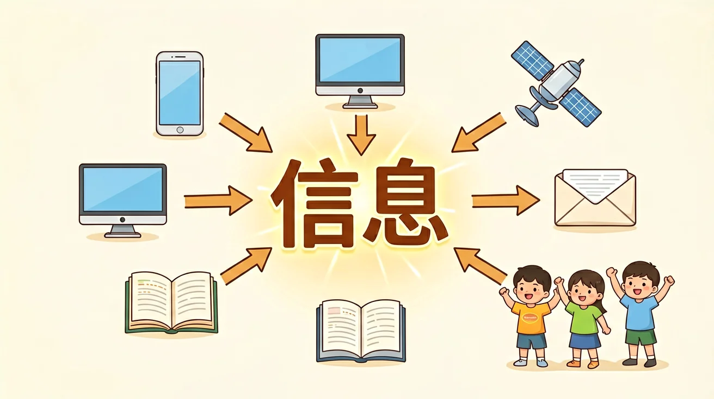
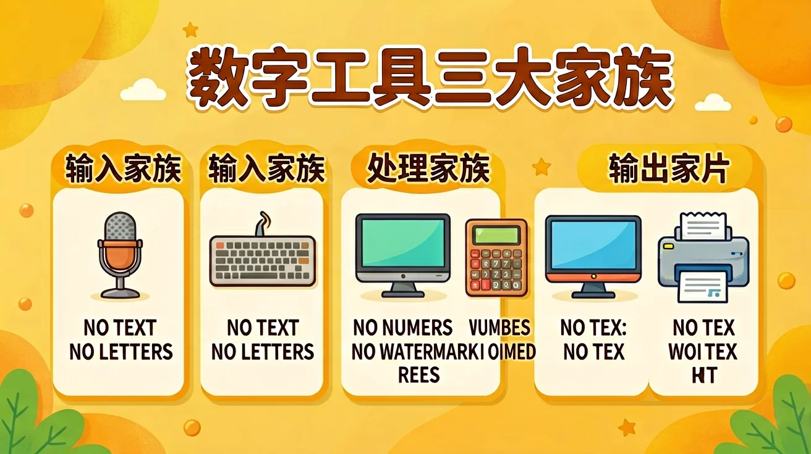
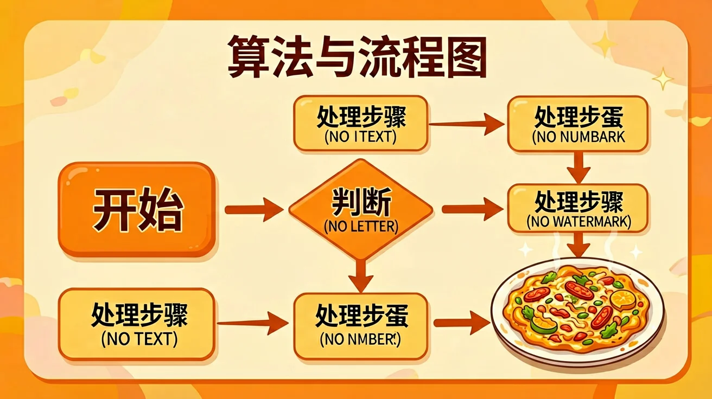
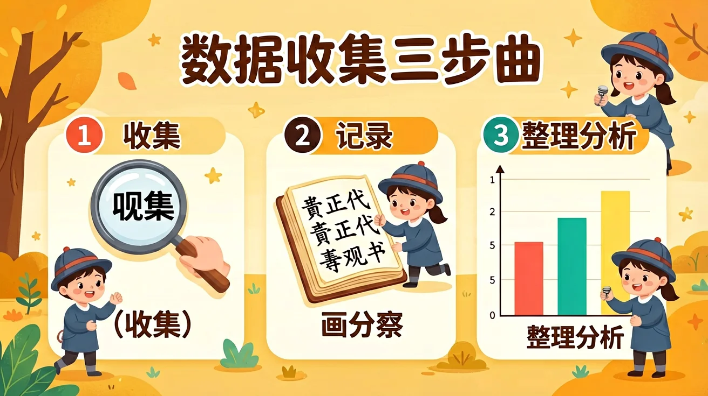
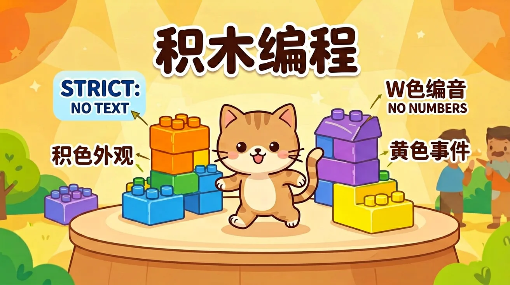
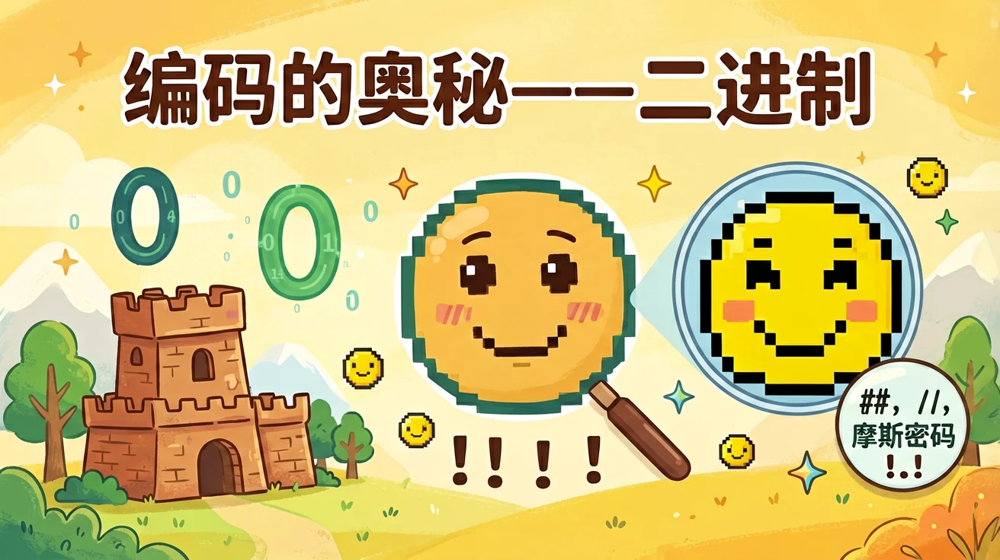
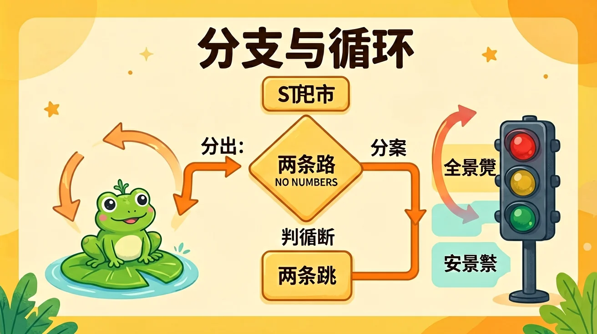

第 1 单元
走进信息世界
什么是信息？信息如何获取与传递？认识在线工具与信息安全。

第 2 单元
数字工具小能手
输入、处理、输出三大家族；先想任务再选工具；安全使用三规则。

第 3 单元
算法与流程图
算法 = 有序步骤；流程图四种图形；用自然语言和图形描述算法。

第 4 单元
数据收集小侦探
观察/调查/实验三招收集数据；画正字记录；整理分析三步曲。

第 5 单元
积木编程第一课
程序 = 有序指令；积木四大家族；拼接、运行与调试捉虫。

第 6 单元
编码的奥秘
二进制只用 0 和 1；摩斯密码；字符与图片的编码原理。

第 7 单元
让数据开口说话
条形图比多少、折线图看变化、饼图看占比；识破图表陷阱。

第 8 单元
分支与循环
顺序、分支、循环三种基本结构；任何程序都由它们组合而成。